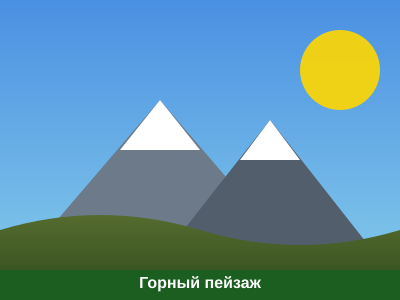

Галерея изображений → | Задание 2 →

На этой иллюстрации изображены горные вершины на фоне неба. Перейти в галерею пейзажей →
Выполнил: студент гр. ПИ-209БЗу Баянов Дияз | Факультет ИИМРТ, Кафедра АСУ